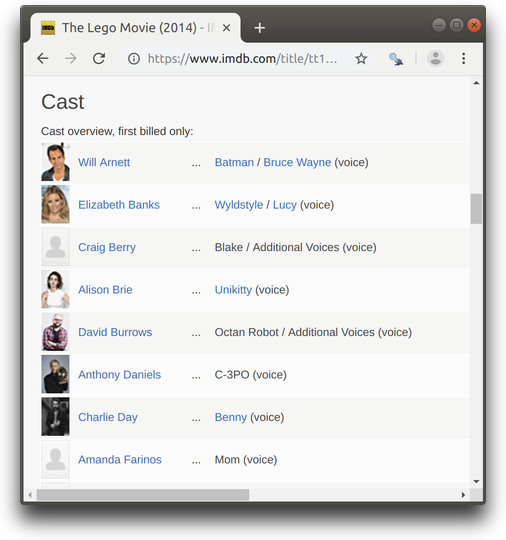

SelectorGadget is a JavaScript bookmarklet that allows you to interactively figure out what css selector you need to extract desired components from a page.
Installation
To install it, open this page in your browser, and then drag the following link to your bookmark bar: SelectorGadget.
Use
To use it, open the page
Click on the element you want to select. SelectorGadget will make a first guess at what css selector you want. It’s likely to be bad since it only has one example to learn from, but it’s a start. Elements that match the selector will be highlighted in yellow.
Click on elements that shouldn’t be selected. They will turn red. Click on elements that should be selected. They will turn green.
Iterate until only the elements you want are selected. SelectorGadget isn’t perfect and sometimes won’t be able to find a useful css selector. Sometimes starting from a different element helps.
For example, imagine we want to find the actors listed on an IMDB movie page, e.g. The Lego Movie.
-
Navigate to the page and scroll to the actors list.

-
Click on the SelectorGadget link in the bookmarks. The SelectorGadget console will appear at the bottom of the screen, and element currently under the mouse will be highlighted in orange.

-
Click on the element you want to select (the name of an actor). The element you selected will be highlighted in green. SelectorGadget guesses which css selector you want (
ain this case), and highlights all matches in yellow (see total count equal to 592 as indicated on on the “Clear” button). This seems to be a little too excessive.
-
Scroll around the document to find elements that you don’t want to match and click on them. For example, we don’t to match the character the actor contributed to, so we click on it and it turns red. The css selector updates to
.primary_photo+ td a.

Once we’ve determined the css selector, we can use it in R to extract the values we want:
library(rvest)
#> Loading required package: xml2
lego_url <- "http://www.imdb.com/title/tt1490017/"
html <- read_html(lego_url)
cast <- html_nodes(html, ".primary_photo+ td a")
length(cast)
#> [1] 15
cast[1:2]
#> {xml_nodeset (2)}
#> [1] <a href="/name/nm0004715/?ref_=tt_cl_t1"> Will Arnett\n</a>
#> [2] <a href="/name/nm0006969/?ref_=tt_cl_t2"> Elizabeth Banks\n</a>Finally, we can extract the text from the selected HTML nodes.
Looking carefully at this output, we see twice as many matches as we expected. That’s because we’ve selected both the table cell and the text inside the cell. We can experiment with selectorgadget to find a better match or look at the html directly.
html_text(cast, trim = TRUE)
#> [1] "Will Arnett" "Elizabeth Banks" "Craig Berry" "Alison Brie"
#> [5] "David Burrows" "Anthony Daniels" "Charlie Day" "Amanda Farinos"
#> [9] "Keith Ferguson" "Will Ferrell" "Will Forte" "Dave Franco"
#> [13] "Morgan Freeman" "Todd Hansen" "Jonah Hill"Let’s say we’re also interested in extracting the links to the actors’ pages. We can access html attributes of the selected nodes using html_attrs().
cast_attrs <- html_attrs(cast)
length(cast_attrs)
#> [1] 15
cast_attrs[1:2]
#> [[1]]
#> href
#> "/name/nm0004715/?ref_=tt_cl_t1"
#>
#> [[2]]
#> href
#> "/name/nm0006969/?ref_=tt_cl_t2"As we can see there’s only one attribute called href which contains relative url to the actor’s page. We can extract it using html_attr(), indicating the name of the attribute of interest. Relative urls can be turned to absolute urls using url_absolute().
cast_rel_urls <- html_attr(cast, "href")
length(cast_rel_urls)
#> [1] 15
cast_rel_urls[1:2]
#> [1] "/name/nm0004715/?ref_=tt_cl_t1" "/name/nm0006969/?ref_=tt_cl_t2"
cast_abs_urls <- html_attr(cast, "href") %>%
url_absolute(lego_url)
cast_abs_urls[1:2]
#> [1] "http://www.imdb.com/name/nm0004715/?ref_=tt_cl_t1"
#> [2] "http://www.imdb.com/name/nm0006969/?ref_=tt_cl_t2"